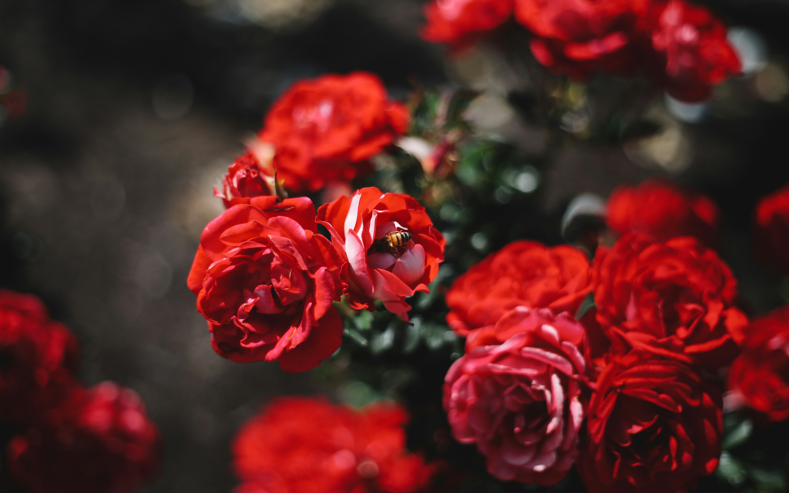

Bienvenidos a las flores terrestres
Las flores terrestres son verdaderas obras maestras de la naturaleza, que han adornado nuestro planeta con su belleza y diversidad durante millones de años. Estas maravillosas creaciones son el resultado de una intrincada evolución, adaptándose a diversos climas, suelos y ecosistemas en todo el mundo.
Esta flor emblemática ha cautivado a la humanidad desde tiempos inmemoriales con su belleza exquisita y su aroma embriagador. Perteneciente a la familia de las rosáceas, las rosas presentan una amplia gama de colores que van desde los tonos más puros del blanco hasta los rojos más intensos, pasando por una variedad de matices rosas, amarillos, naranjas y otros colores deslumbrantes.

El girasol es una flor verdaderamente espectacular que cautiva con su luminosa belleza y su imponente presencia.La característica más distintiva del girasol es su enorme capítulo floral, que puede medir hasta 30 centímetros de diámetro. En el centro, se encuentran diminutas flores de color oscuro rodeadas por hileras concéntricas de pétalos amarillos intensos, resemblando los rayos del sol.

La orquídea es una flor verdaderamente extraordinaria, conocida por su exquisita belleza y sus formas sorprendentes. Perteneciente a la familia de las orquidáceas, una de las más numerosas del reino vegetal, estas plantas fascinantes han cautivado a coleccionistas y amantes de la naturaleza durante siglos.Lo que distingue a las orquídeas es su increíble diversidad de formas, colores y patrones. Algunas especies exhiben pétalos delicados y etéreos, mientras que otras lucen estructuras complejas y escultóricas que parecen desafiar las leyes de la naturaleza.